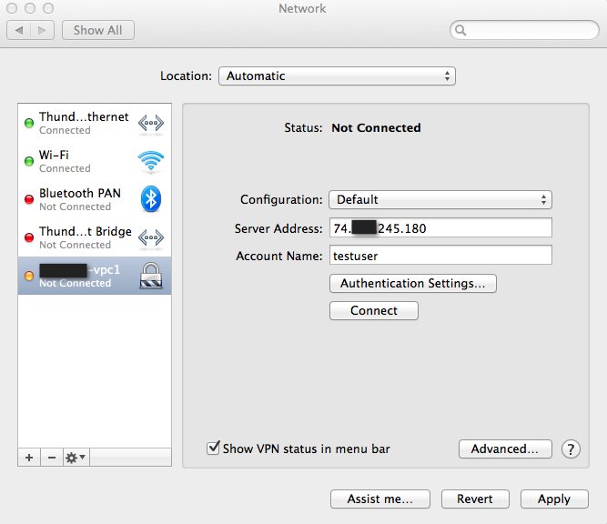
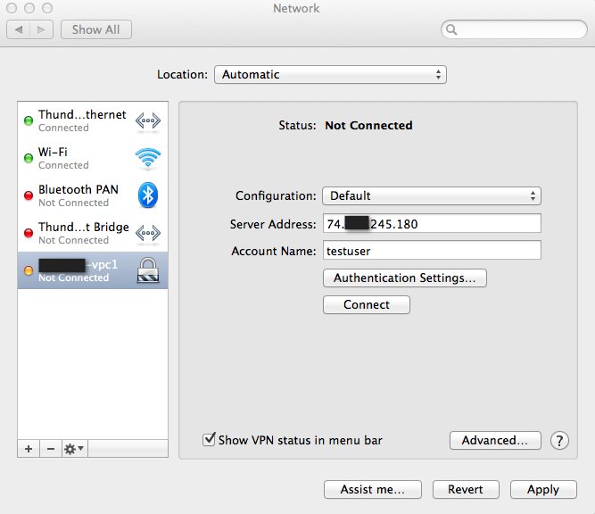
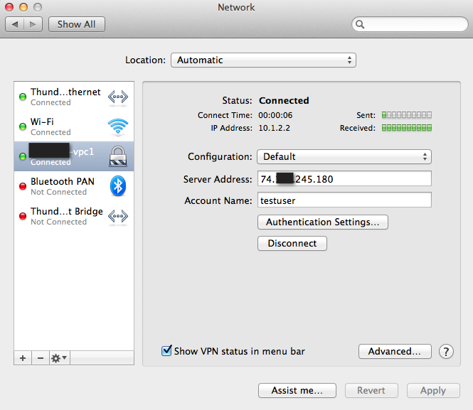

VPN#
Remote Access VPN#
Zergaw CloudStack Account owners can create virtual private networks (VPN) to access their Instances. If the guest network is instantiated from a network offering that offers the Remote Access VPN service, the virtual router (based on the System VM) is used to provide the service. Zergaw CloudStack provides a L2TP-over-IPsec-based remote access VPN service to guest virtual networks. Since each network gets its own virtual router, VPNs are not shared across the networks. VPN clients native to Windows, Mac OS X and iOS can be used to connect to the guest networks. The account owner can create and manage users for their VPN.
Note
Make sure that not all traffic goes through the VPN. That is, the route installed by the VPN should be only for the guest network and not for all traffic.
Road Warrior / Remote Access. Users want to be able to connect securely from a home or office to a private network in the cloud. Typically, the IP address of the connecting client is dynamic and cannot be preconfigured on the VPN server.
Site to Site. In this scenario, two private subnets are connected over the public Internet with a secure VPN tunnel. The cloud user’s subnet (for example, an office network) is connected through a gateway to the network in the cloud. The address of the user’s gateway must be preconfigured on the VPN server in the cloud. Note that although L2TP-over-IPsec can be used to set up Site-to-Site VPNs, this is not the primary intent of this feature. For more information, see “Site-to-Site VPN”.
Configuring Remote Access VPN#
To set up VPN for the cloud:
Log in as a user or administrator to the UI.
In the left navigation, click Network.
Click the name of the network you want to work with.
Click Public IP Addresses.
Click one of the displayed IP address names.
Click the VPN Tab
Click the Enable Remote Access VPN.
The IPsec key is displayed in a popup window.
Configuring Remote Access VPN in VPC#
On enabling Remote Access VPN on a VPC, any VPN client present outside the VPC can access instances present in the VPC by using the Remote VPN connection. The VPN client can be present anywhere except inside the VPC on which the user enabled the Remote Access VPN service.
To enable VPN for a VPC:
Log in as a user or administrator to the UI.
In the left navigation, click Network.
In the Select view, select VPC.
All the VPCs that you have created for the account is listed in the page.
Click on the VPC
In the VPC detail page, select Public IP Addresses.
The IP Addresses page is displayed.
Click Source NAT IP address.
Click the Enable VPN button.
Click OK to confirm. The IPsec key is displayed in a pop-up window.
Now, you need to add the VPN users.
Click the Source NAT IP.
Select the VPN tab.
Add the username and the corresponding password of the user you wanted to add.
Click Add.
Repeat the same steps to add the VPN users.
Using Remote Access VPN#
Remote Access VPN connection to VPC or Guest Network to access Instances and applications. This section considers you have enabled Remote access VPN, refer to: Remote Access VPN.
When connected to a VPC via VPN, the client have access to all Network Tiers.
Following information is required to confiture VPN client:
Public IP: source NAT with VPN enabled.
IPsec pre-shared key: Provide at the VPN activation.
UsernameVPN account username.
PasswordVPN account password.
Mac OSX#
Mac OSX provide native IPsec VPN client.
Into System Preferences -> Network
Click “+” button and add a VPN:
Interface: VPN
VPN Type: L2TP over IPSec
Service Name: (ex: test-vpc1)
Configure L2TP over IPsec
 

Inside Authentication Settings…

Connect into VPN
Click Apply to apply Network configuration changes.
Click Connect to initiate VPN connection.

Microsoft Windows#
Following instruction have been perform using Windows using Native VPN client.


{kind=link}
{kind=link}
{kind=link}
{kind=link}
{kind=link}
{kind=link}
{kind=link}
{kind=link}
{kind=link}
{kind=link}
{kind=link}
Site-to-Site VPN#
A Site-to-Site VPN connection helps you establish a secure connection from an enterprise datacenter to the cloud infrastructure. This allows users to access the Guest Instances by establishing a VPN connection to the virtual router of the account from a device in the datacenter of the enterprise. You can also establish a secure connection between two VPC setups or high availability zones in your environment. Having this facility eliminates the need to establish VPN connections to individual instances.
The difference from Remote VPN is that Site-to-site VPNs connects entire networks to each other, for example, connecting a branch office network to a company headquarters network. In a site-to-site VPN, hosts do not have VPN client software; they send and receive normal TCP/IP traffic through a VPN gateway.
To set up a Site-to-Site VPN connection, perform the following:
Create a Virtual Private Cloud (VPC).
See “configuring-vpc”.
Create a VPN Customer Gateway.
Create a VPN gateway for the VPC that you created.
Create VPN connection from the VPC VPN gateway to the customer VPN gateway.
Creating and Updating a VPN Customer Gateway#
Note
A VPN customer gateway can be connected to only one VPN gateway at a time.
To add a VPN Customer Gateway:
Log in to the UI as an administrator or end user.
In the left navigation, choose Network.
In the Select view, select VPN Customer Gateway.
Click Add VPN Customer Gateway.
Provide the following information:
Name: A unique name for the VPN customer gateway you create.
Gateway: The IP address for the remote gateway.
CIDR list: The guest CIDR list of the remote subnets. Enter a CIDR or a comma-separated list of CIDRs. Ensure that a guest CIDR list is not overlapped with the VPC’s CIDR, or another guest CIDR. The CIDR must be RFC1918-compliant.
IPsec Preshared Key: Preshared keying is a method where the endpoints of the VPN share a secret key. This key value is used to authenticate the customer gateway and the VPC VPN gateway to each other. The sequence cannot contain a newline or double-quote.
Note
The IKE peers (VPN end points) authenticate each other by computing and sending a keyed hash of data that includes the Preshared key. If the receiving peer is able to create the same hash independently by using its Preshared key, it knows that both peers must share the same secret, thus authenticating the customer gateway.
IKE Encryption: The Internet Key Exchange (IKE) policy for phase-1. The supported encryption algorithms are AES128, AES192, AES256, and 3DES. Authentication is accomplished through the Preshared Keys.
Note
The phase-1 is the first phase in the IKE process. In this initial negotiation phase, the two VPN endpoints agree on the methods to be used to provide security for the underlying IP traffic. The phase-1 authenticates the two VPN gateways to each other, by confirming that the remote gateway has a matching Preshared Key.
IKE Hash: The IKE hash for phase-1. The supported hash algorithms are SHA1 and MD5.
IKE DH: A public-key cryptography protocol which allows two parties to establish a shared secret over an insecure communications channel. The 1536-bit Diffie-Hellman group is used within IKE to establish session keys. The supported options are None, Group-5 (1536-bit) and Group-2 (1024-bit).
ESP Encryption: Encapsulating Security Payload (ESP) algorithm within phase-2. The supported encryption algorithms are AES128, AES192, AES256, and 3DES.
Note
The phase-2 is the second phase in the IKE process. The purpose of IKE phase-2 is to negotiate IPSec security associations (SA) to set up the IPSec tunnel. In phase-2, new keying material is extracted from the Diffie-Hellman key exchange in phase-1, to provide session keys to use in protecting the VPN data flow.
ESP Hash: Encapsulating Security Payload (ESP) hash for phase-2. Supported hash algorithms are SHA1 and MD5.
Perfect Forward Secrecy: Perfect Forward Secrecy (or PFS) is the property that ensures that a session key derived from a set of long-term public and private keys will not be compromised. This property enforces a new Diffie-Hellman key exchange. It provides the keying material that has greater key material life and thereby greater resistance to cryptographic attacks. The available options are None, Group-5 (1536-bit) and Group-2 (1024-bit). The security of the key exchanges increase as the DH groups grow larger, as does the time of the exchanges.
Note
When PFS is turned on, for every negotiation of a new phase-2 SA the two gateways must generate a new set of phase-1 keys. This adds an extra layer of protection that PFS adds, which ensures if the phase-2 SA’s have expired, the keys used for new phase-2 SA’s have not been generated from the current phase-1 keying material.
IKE Lifetime (seconds): The phase-1 lifetime of the security association in seconds. Default is 86400 seconds (1 day). Whenever the time expires, a new phase-1 exchange is performed.
ESP Lifetime (seconds): The phase-2 lifetime of the security association in seconds. Default is 3600 seconds (1 hour). Whenever the value is exceeded, a re-key is initiated to provide a new IPsec encryption and authentication session keys.
Dead Peer Detection: A method to detect an unavailable Internet Key Exchange (IKE) peer. Select this option if you want the virtual router to query the liveliness of its IKE peer at regular intervals. It’s recommended to have the same configuration of DPD on both side of VPN connection.
Force UDP Encapsulation of ESP Packets: Force Encapsulation for NAT traversal
Click OK.
Updating and Removing a VPN Customer Gateway#
You can update a customer gateway either with no VPN connection, or related VPN connection is in error state.
Log in to the UI as an administrator or end user.
In the left navigation, choose Network.
In the Select view, select VPN Customer Gateway.
Select the VPN customer gateway you want to work with.
To modify the required parameters, click the Edit VPN Customer Gateway button

To remove the VPN customer gateway, click the Delete VPN Customer Gateway button
Click OK.
Creating a VPN gateway for the VPC#
Log in to the UI as an administrator or end user.
In the left navigation, choose Network.
In the Select view, select VPC.
All the VPCs that you have created for the account is listed in the page.
Click on the VPC
Select VPN gateway.
If you are creating the VPN gateway for the first time, click on Create site-to-site VPN gateway.
Creating a VPN Connection#
Note
Zergaw CloudStack supports creating up to 8 VPN connections.
Log in to the UI as an administrator or end user.
In the left navigation, choose Network.
In the Select view, select VPC.
All the VPCs that you create for the account are listed in the page.
Click on the VPC
From the VPC detail page click on VPN connection.
Click site-to-site Create VPN Connection.
The Create VPN Connection dialog is displayed:
Select the desired customer gateway.
Select Passive if you want to establish a connection between two VPC virtual routers.
If you want to establish a connection between two VPC virtual routers, select Passive only on one of the VPC virtual routers, which waits for the other VPC virtual router to initiate the connection. Do not select Passive on the VPC virtual router that initiates the connection.
Click OK to confirm.
Within a few moments, the VPN Connection is displayed.
The following information on the VPN connection is displayed:
IP Address
Gateway
State
IPSec Preshared Key
IKE Policy
ESP Policy
Site-to-Site VPN Connection Between VPC Networks#
Zergaw CloudStack provides you with the ability to establish a site-to-site VPN connection between different VPCs. To achieve that, add a passive mode Site-to-Site VPN. With this functionality, users can deploy applications in multiple Availability Zones or VPCs, which can communicate with each other by using a secure Site-to-Site VPN Tunnel.
Create two VPCs. For example, VPC A and VPC B.
For more information, see “configuring-vpc”.
Create VPN gateways on both the VPCs you created.
For more information, see “Creating a VPN gateway for the VPC”.
Create VPN customer gateway for both the VPCs.
For more information, see “Creating and Updating a VPN Customer Gateway”.
Enable a VPN connection on VPC A in passive mode.
For more information, see “Creating a VPN Connection”.
Ensure that the customer gateway is pointed to VPC B. The VPN connection is shown in the Disconnected state.
Enable a VPN connection on VPC B.
Ensure that the customer gateway is pointed to VPC A. Because virtual router of VPC A, in this case, is in passive mode and is waiting for the virtual router of VPC B to initiate the connection, VPC B virtual router should not be in passive mode.
The VPN connection is shown in the Disconnected state.
Creating VPN connection on both the VPCs initiates a VPN connection. Wait for few seconds. The default is 30 seconds for both the VPN connections to show the Connected state.
Restarting and Removing a VPN Connection#
Log in to the UI as an administrator or end user.
In the left navigation, choose Network.
In the Select view, select VPC.
All the VPCs that you have created for the account is listed in the page.
Click on the VPC
Click on VPN connection from the VPC detail page and Select the VPN connection you want to work with.
The Details tab is displayed.
To remove a VPN connection, click the Delete VPN connection button

To restart a VPN connection, click the Reset VPN connection button present in the Details tab.